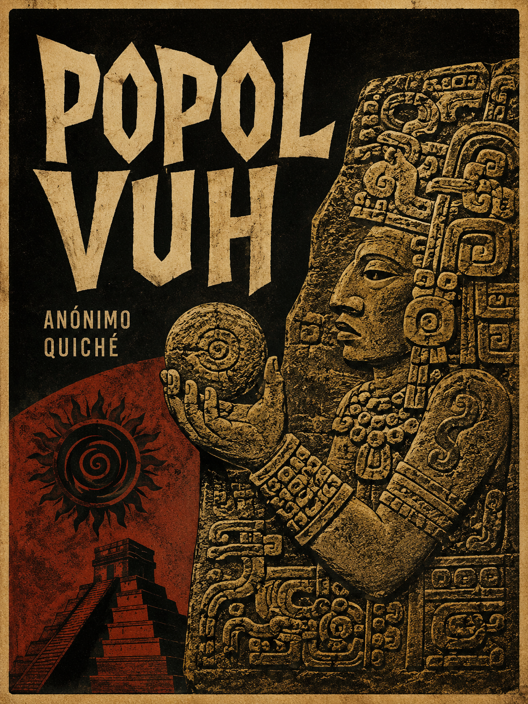
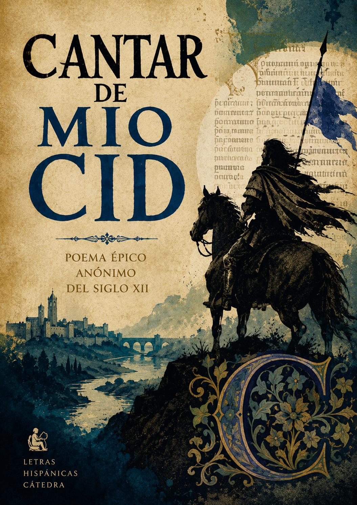
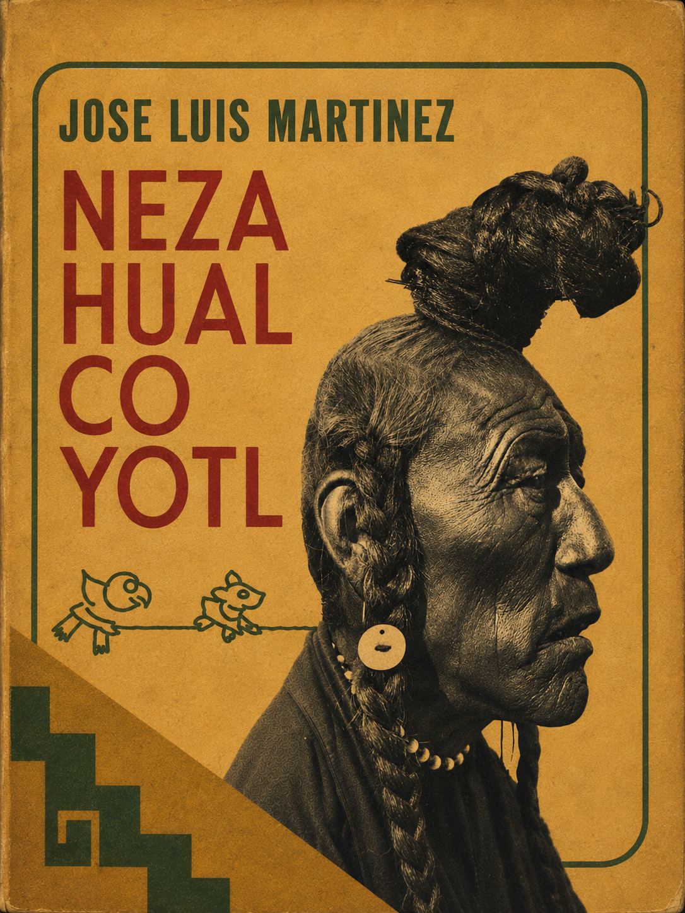

Popol Vuh
7.8Resumen
El texto sagrado de los quiché de Guatemala, transcrito en el siglo XVI a partir de tradición oral y pictórica mucho más antigua. Narra la creación del mundo por los dioses —tras varios intentos fallidos con hombres de barro y de madera— hasta llegar a los hombres de maíz, y las aventuras de los Héroes Gemelos, Hunahpú e Ixbalanqué, que descienden a Xibalbá, el inframundo, para vencer a sus señores.

Cantar de mio Cid
6.3Resumen
El poema épico más antiguo conservado en castellano, copiado por Per Abbat en 1207. Sigue a Rodrigo Díaz de Vivar tras su destierro ordenado por Alfonso VI, sus campañas militares hasta la conquista de Valencia, y la restitución de su honor —y el de sus hijas— tras la afrenta de los Infantes de Carrión.

Nezahualcóyotl
7.7Resumen
Biografía intelectual del rey-poeta de Texcoco (1402–1472), construida por José Luis Martínez a partir de testimonios históricos verosímiles. Recorre su infancia marcada por el asesinato de su padre, su exilio, su ascenso como gobernante dentro de la Triple Alianza, sus obras de ingeniería, y la poesía náhuatl por la que es recordado, meditando sobre el tiempo, la muerte y lo divino.
Libro de buen amor
8.0Resumen
Obra inclasificable del siglo XIV en la que Juan Ruiz, Arcipreste de Hita, mezcla autobiografía, fábulas, exempla morales y episodios amorosos cómicos, narrados por un yo poético cuyas aventuras oscilan entre el "loco amor" y el "buen amor". Trotaconventos, la alcahueta que guía al narrador, se convertiría en antecedente directo de la picaresca española.
Duelo de la Virgen
10.0Resumen
Poema devocional de Gonzalo de Berceo, pionero del mester de clerecía, en el que la Virgen narra en primera persona su dolor al presenciar la Crucifixión de su hijo. Estructurado como un planto —un lamento ritual—, combina el relato bíblico con una intimidad emocional que buscaba conmover directamente a un público medieval devoto.